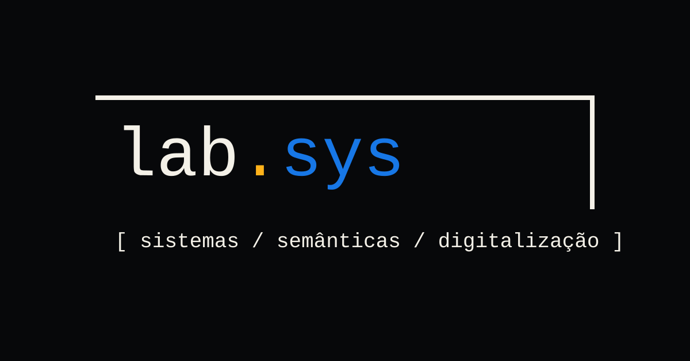
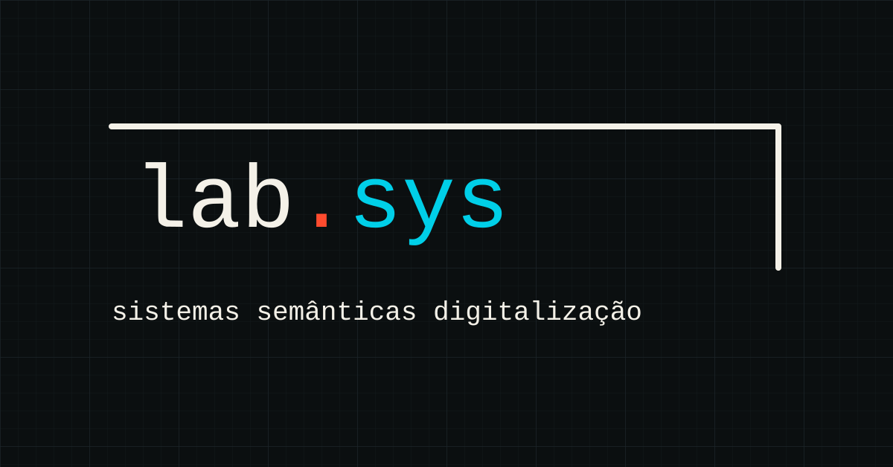
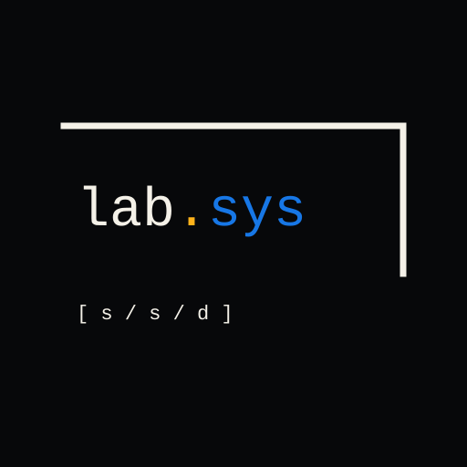
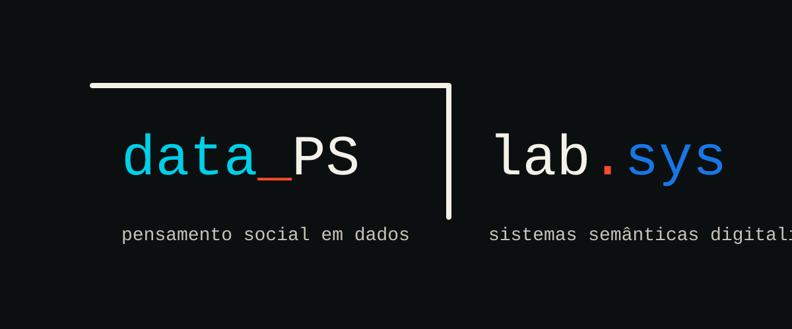

A identidade parte da notação de distinção/reentrada de Spencer-Brown: marcar um lado, deixar outro aberto e transformar a operação de observar em linguagem visual.
Logos



Paleta
Sistema
Forma antes de cor A marca de distinção, a fonte mono e o ponto colorido são mais importantes que a escolha entre azul, teal ou cyan.
Pares complementares Use uma cor fria para `sys` ou o subgrupo e um acento quente para o ponto, sublinhado ou separador.
Subgrupos O subgrupo entra na parte marcada; `lab.sys` permanece na parte não marcada para manter filiação institucional.